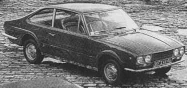
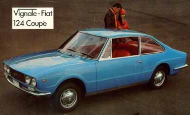
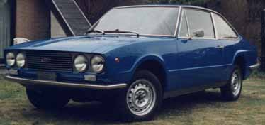
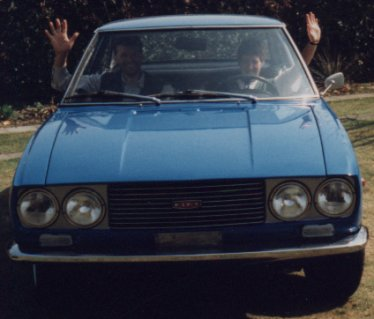
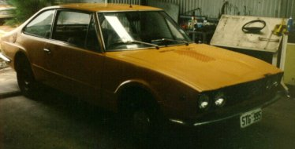
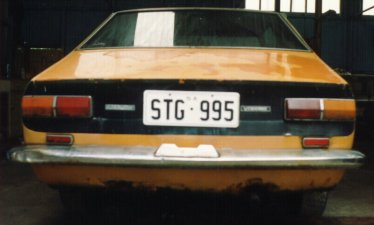

Carrozzeria Vignale · Fiat
Vignale 124/Eveline

English brochure

The F. Demetriou Group presents the Vignale-Fiat 124 Coupé
A truly winning combination
Vignale, the world-renowned Italian designer and coachbuilder, has been awarded the Golden Mercury, the “Oscar” of European commerce for his car styling. Fiat won the Car of the Year award for their 124 model. The Vignale-Fiat 124 Coupé is therefore a uniquely winning combination. The truly beautiful proportions of this car, with its flared fastback incorporating a “picture” window, are the essence of Italian styling at its highest level. Though termed as a coupé, its reclining front bucket seats and contoured rear seats provide armchair comfort for four people, with ample room in the large boot for all the luggage. And the Fiat 124 engine and chassis offer an unmatched combination of performance and safety, economy and reliability.
Body
Two-door all-steel body giving armchair seating for four; wide-opening doors with rear warning lights; electric window lifts; opening front quarter lights; door armrests; fully-reclining front seats; contoured rear seats with companion box and ashtray between; hinged rear quarter lights; grab handles; three courtesy lights; dipping rearview mirror; lockable glove box; parcel shelf; wood-rimmed steering wheel; heater with booster fan; concealed interior release for boot catch; boot light; lockable petrol filler cap; twin headlights; wraparound bumpers front and rear. Choice of 16 colours including six metallic, and five upholstery colours. A Standard model of the 124 Coupé is available without electric window lifts, wood-rimmed steering wheel or metallic finish.
Technical data
Front mounted four-cylinder 1197cc engine, compression ratio 8.8:1, 65hp (SAE), five-bearing camshaft, twin-choke carburettor, recirculating exhaust system. Four synchronised forward gears. Disc brakes all round with braking effort distribution valve. No greasing required.
Dimensions
Length 13ft 6in, width 4ft 10in, height 4ft 5½in, fuel tank 8½ gallons (approx.)
Sole importers and distributors of Vignale-Fiat cars in the United Kingdom and Ireland: F. Demetriou & Son Ltd., 73/9 Queensway, London W2. Tel: 01-229-9266/7. Cables: Demetrosi London W2.
Belgian Fiat 124S Vignale


Owner: Paul Van der Straeten.
Chassis nr: 0535122. Engine nr: 124 B2 000 0532256. Parts nr: 1816 — this number can be found on all body parts, inscribed on an aluminium badge under the hood. Year: 1971. First registration in Belgium: 1974 — this is probably also the car’s first registration; the cars did not sell well and had to wait far too long at the reseller before being sold.
Paul bought his car in 1992 and has restored it completely. When he bought his car it had driven 68,000 km.
Additional information
At the lock of the left door an aluminium badge with the number 5183 is attached. Paul does not know the purpose of this number and welcomes any extra information.
At both sides of the car — underneath the Vignale badge — a badge with “special export” can be found. This badge is also attached to the dashboard.
Apparently this car is a special version of the 124 Vignale. Paul has traced some other models, but all these were built on the floorpan of a Fiat 124 sedan. His car is built on the floorpan of a Fiat 124 special. This implies that the dashboard of this 124S is different from the dashboard of a ‘standard’ Vignale 124. The engine is a 1438cc with overhead camshaft and double carburettors. The rear axle is fixed differently and the car has electrical side windows. Also the external finishing shows differences: the chromework is largely different, as well as the license plate at the front and the rear lights.
The cars Paul traced are located in the UK (imported from Italy) and in France.
Parts/pictures needed
As mentioned above, the car is fully restored to its original condition. Paul does need a new rear bumper; the original one was unrestorably rusted and is only painted at this time. Secondly he is looking for a picture of the original dashboard of the 124S; the former owner had altered it substantially. Until now Paul was not even able to find a photo of a complete 124S dashboard.
1967 Australian Vignale 124/Eveline


Owner: Philip Buggee.
Chassis nr: IGM46000M (124A 0372775). Engine nr: 124A 000 037 2641. Color: Mustard.
History: the pictures above are from the day Philip first found it in South Australia, some 800km from his home. Further history is unknown, but he is seeking its Australian history.
Information: Philip would like to receive any further production information anybody can supply. He is also looking for parts books or a copy of the (body) parts listings.